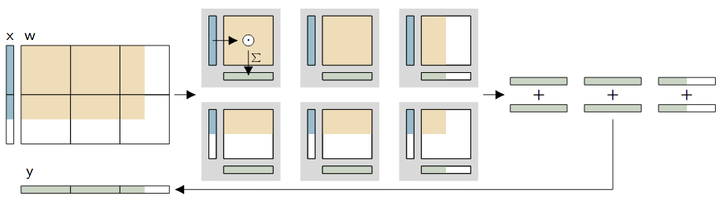

Exploring the analog MAC operation¶
Note
Currently, this code is not executable on the EBRAINS platform.
This example presents the non-spiking mode of the BrainScaleS-2 ASIC and some of its characteristics. The operation of this so-called hagen mode is explained in more detail in the matrix multiplication introduction.
In order to use the microscheduler we have to set some environment variables first:
from _static.common.helpers import setup_hardware_client
setup_hardware_client()
First, we import some things needed later:
%matplotlib inline
import numpy as np
import torch
import hxtorch
import matplotlib as mpl
import matplotlib.pyplot as plt
from contextlib import suppress
with suppress(IOError):
plt.style.use("_static/matplotlibrc")
from _static.common.helpers import save_nightly_calibration
import ipywidgets as w
from functools import partial
IntSlider = partial(w.IntSlider, continuous_update=False)
The hxtorch API¶
The hagen mode provides an analog multiply accumulate operation (MAC) which is performed on the ASIC.
hxtorch provides a high-level API for this operation mode that
integrates this functionality into PyTorch.
In analogy to some functions of this machine-learning framework,
operations with similar API are provided, e.g. matmul for
multiplication of two matrices:
print(hxtorch.matmul.__doc__)
matmul(input: at::Tensor, other: at::Tensor, num_sends: int = 1,
wait_between_events: int = 5, mock: bool = False) -> at::Tensor
Drop-in replacement for torch.matmul() that uses HICANN-X.
The current implementation only supports other to be 1D or 2D.
:param input: First input tensor, allowed range [0, 31]
:param other: Second input tensor, allowed range: [-63, 63]
:param num_sends: How often to send the (same) input vector
:param wait_between_events: How long to wait (in FPGA cycles) between events
:returns: Resulting tensor
Before the hardware can be used, we have to allocate a connection and to
load a calibration. This can be achieved using hxtorch.init_hardware:
# download claibration and initialize hardware configuration
save_nightly_calibration('hagen_cocolist.pbin')
hxtorch.init_hardware(hxtorch.CalibrationPath('hagen_cocolist.pbin'))
This already enables us to multiply matrices using the BSS-2 accelerator:
M1 = torch.full((100,), 15.)
M2 = torch.full((100, 10), 21.)
hxtorch.matmul(M1, M2)
tensor([55., 60., 59., 56., 60., 63., 57., 58., 56., 62.])
hxtorch integrates the MAC operation into PyTorch on a per-operation
basis (but also supports the combination of multiple operations) and is
executed just-in-time on the BrainScaleS-2 hardware.
{kind=link}
A decisive advantage of the matrix multiplication mode is the possibility to decompose large operations and smaller parts and either multiplex them in time or even divide them among several BrainScaleS-2 ASICs:
{kind=link}
Noise and fixed-pattern deviations¶
Despite calibration and even with the same inputs and weights, the outputs of the different neurons are not identical. On the one hand, each output has a statistical noise due to the analog nature of the neuron, on the other hand, fixed-pattern deviations show up between the individual neurons. Especially in the case of small inputs, a spatial correlation may also become apparent, resulting from different distances to the synapse drivers.
# prepare output figure
neurons = torch.arange(0, 256)
slices = [slice(0, 128), slice(128, 256)]
fig, axes = plt.subplots(1, 2, sharey=True)
for ax, s in zip(axes, slices):
ax.plot(neurons[s], torch.zeros_like(neurons[s]), ".", c="C0")
ax.set_xlim(s.start, s.stop); ax.set_ylim(-130, 130)
ax.xaxis.set_major_locator(mpl.ticker.MultipleLocator(32))
ax.set_xlabel("neuron #"); ax.set_ylabel("output"); ax.label_outer()
axes[0]; axes[0].invert_xaxis()
plt.close()
output = w.Output()
@w.interact(
num_sends=IntSlider(100, 1, 256, description="num sends"),
input_value=IntSlider(12, 0, 31, description="input value"),
weight_value=IntSlider(21, -63, 63, description="weight value"),
row_number=IntSlider(0, 0, 127, description="row number"),
)
def experiment(num_sends, input_value, weight_value, row_number):
""" Updates the plot with the outputs from the hardware """
result = hxtorch.matmul(
torch.tensor([0.] * row_number + [input_value], dtype=torch.float),
torch.full((row_number + 1, 256), weight_value, dtype=torch.float),
num_sends=num_sends)
for ax, s in zip(axes, slices):
ax.lines[0].set_ydata(result[s])
output.clear_output(wait=True)
with output:
display(fig)
experiment(100, 12, 21, 0) # needed for testing
display(output)
{kind=link}
{kind=link}
Linearity of the MAC operation¶
The next plot shows the linear relationship between input, weight and output. For this purpose, a constant input is multiplied by a linearly increasing weight vector.
weight = torch.arange(-63, 64.).repeat_interleave(2)
# prepare output figure
fig, ax = plt.subplots(1, 1)
ax.plot(weight, torch.zeros_like(weight), ".", c="C0")
ax.set_xlim(-64, 64); ax.set_ylim(-130, 130)
ax.xaxis.set_major_locator(mpl.ticker.MultipleLocator(16))
ax.set_xlabel("weight"); ax.set_ylabel("output")
plt.close()
output = w.Output()
@w.interact(
num_sends=IntSlider(100, 1, 256, description="num sends"),
input_value=IntSlider(12, 0, 31, description="input value"),
row_number=IntSlider(0, 0, 127, description="row number"),
)
def experiment(num_sends, input_value, row_number):
""" Updates the plot with the outputs from the hardware """
result = hxtorch.matmul(
torch.tensor([0.] * row_number + [input_value], dtype=torch.float),
weight.unsqueeze(0).expand(row_number + 1, -1),
num_sends=num_sends)
ax.lines[0].set_ydata(result)
output.clear_output(wait=True)
with output:
display(fig)
experiment(100, 12, 0) # needed for testing
display(output)
{kind=link}
{kind=link}
At output values of about -80 to 80 a good linear correlation can be observed. For smaller or larger values, the used ADC saturates; this happens earlier for some neurons and later for others.
Possible questions:¶
How does the result change with several successive calls to hxtorch.matmul?¶
Due to its analog nature, the BrainScaleS-2 ASIC provides slightly different values for each call. Quantify the noise on each neuron!
What is the relationship between input and output? Is it linear?¶
We have seen that the relationship between weight and output is quite linear at intermediate values. How, on the other hand, does the output change with changing inputs and constant weight? Is the relationship linear?
Negative inputs?¶
The inputs to the multiply accumulate operation correspond to the time a current flows on neuron membranes, which means they must be positive only. How would it still be possible to allow negative inputs in a calculation?
The integration with PyTorch allows the MAC to be used very easily for conventional machine learning. For this, the forward pass is computed with the ASIC, the backward pass on the host computer. The example for training DNNs shows such a usage.